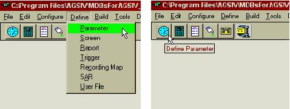

Overview
Parameters are values representing aircraft information and conditions such as altitude, oil pressure, and airspeed. They are either acquired from sensors and busses installed in the aircraft or derived from other parameters. Typical derived values are flight hours and maximum vertical acceleration. As such, parameters are the basic components of ACMS. Potential sources for obtaining parameters are many, but ACMS is limited to acquiring only from those sources that are wired to the airborne units. Once acquired or derived, parameters may be recorded on tape, reported to ground stations, called up on the flight deck display, etc.
Parameters are usually the first items defined when specifying an application. This is done by selecting the Parameter option from the Define pull down menu or pressing the parameter button from the toolbar. Portions of an AGS IV window, indicating the position of the toolbar and the parameter button, is shown in Figure 3.1 (Note: The SAR option is not available for iDMU).

Figure 3.1: AGS IV Main Menu and Toolbar with
Define Parameter selected.
Once the parameter selection is made, a new window titled Parameter Selection is opened, which contains a list of all previously defined parameters. Figure 3.2 illustrates the parameter selection windows. A typical parameter called N1A1, from a list of parameters already defined, is shown selected. Next to this list is a set of buttons that enable the user to:
define  parameters,
parameters,
 existing parameters for display or modification,
existing parameters for display or modification,
 one
parameter definition into another,
one
parameter definition into another,
 a defined parameter,
a defined parameter,
a parameter or a group of parameters based on a template, or
to Manufacturer Access is required to protect parameters.
Figure 3.2: Parameter Selection Window.
Following are explanations of each of the parameter definition buttons shown in Figure 3.2:
 -
This selection first inquires for a parameter name (see Figure 3.3). Parameter names are limited
to 8 characters, the first being alphabetic and the rest alphanumeric. It is
advisable to select parameter names that are easy to understand and
representative of the parameter value. For example DRIFT might be assigned as
the name of the drift angle.
-
This selection first inquires for a parameter name (see Figure 3.3). Parameter names are limited
to 8 characters, the first being alphabetic and the rest alphanumeric. It is
advisable to select parameter names that are easy to understand and
representative of the parameter value. For example DRIFT might be assigned as
the name of the drift angle.
Each application also contains a group of predefined parameter names that start with the digit “0”. These are called reserved parameters and in many cases carry information about the ACMS system itself (rather than the aircraft). Typical of these reserved parameters is the number of reports stored in non-volatile memory, etc.
For iDMU only, parameter names may be optionally followed by a “.” and bus extension. This is to support the redundancy of the information that is available on many aircraft systems.
In these systems with redundant output, the same information is made available on multiple data busses. These are usually called “A” and “B” bus or “Left”, “Right” and “Center” bus. If more than one of these busses are connected to the system then it is necessary to identify the different values of the same parameter, obtained from the different busses. In this case one of the valid extensions “A”, “B”, “L”, “R”, or “C” is appended to the parameter name following the “.” character.
AGS IV in conjunction with the airborne units also provides a capability for automatically switching from one bus to another in case the data on some busses become unavailable. In these cases the parameters must be defined with a “.X” extension if the switching is to happen between the left, right and center busses, or equivalently be defined with a “.Y” extension if the switching is to happen between the “A” and “B” busses.
As an example, the N1A1 parameter referred to above might have been defined as N1A1.L to indicate acquisition from the left bus. In a similar way, N1A1.X may be used to indicate to the system to switch between the left, right or center busses in case there is an interruption in the data received from the current bus. The specifications of the airborne units further describe the function of automatic bus switching.
Once the parameter name is entered, the system allows the entry of the parameter attributes, as described later in this chapter.
Figure 3.3: Parameter name inquiry window.
Applicable to new parameter definition.
 - To open a parameter for display or modification, the parameter
must first be selected from the pre-defined list of parameters in the system
(see Figure 3.2). The list can be scrolled up or down using the scroll bar or
sorted in ascending (or descending) form using the title bar at the top of the
list (as described in the Introduction). Once the cursor is positioned in the
selection list, typing the first two characters of the parameter name also
positions the list in the vicinity of parameters starting with the typed
letters.
- To open a parameter for display or modification, the parameter
must first be selected from the pre-defined list of parameters in the system
(see Figure 3.2). The list can be scrolled up or down using the scroll bar or
sorted in ascending (or descending) form using the title bar at the top of the
list (as described in the Introduction). Once the cursor is positioned in the
selection list, typing the first two characters of the parameter name also
positions the list in the vicinity of parameters starting with the typed
letters.
Once a parameter is selected and opened, the parameter attributes can be modified, as described under Parameter Definition later in this chapter.
 - This function creates a new parameter, while copying information
from an existing parameter. To copy, select the source parameter, then select
the
- This function creates a new parameter, while copying information
from an existing parameter. To copy, select the source parameter, then select
the  button and enter the new parameter name when
prompted (in a fashion similar to the case of defining a new parameter. (See Figure 3.3). The fields in the new
parameter can then be modified as desired.
button and enter the new parameter name when
prompted (in a fashion similar to the case of defining a new parameter. (See Figure 3.3). The fields in the new
parameter can then be modified as desired.
 - To delete a parameter, select the parameter, click
the
- To delete a parameter, select the parameter, click
the  button, and confirm the action.
button, and confirm the action.
 - This function allows searches on
existing parameters satisfying certain attributes and creates a
list of such parameters. Search criteria are specified in the Find
Parameter form, followed by the
- This function allows searches on
existing parameters satisfying certain attributes and creates a
list of such parameters. Search criteria are specified in the Find
Parameter form, followed by the  button (see Figure 3.4). The fields of this
form will be explained later in this chapter. The search may find zero or more
parameters satisfying the criteria.
button (see Figure 3.4). The fields of this
form will be explained later in this chapter. The search may find zero or more
parameters satisfying the criteria.
By selecting “Contain” rather than “Match”, one can enter partial fields in the search form (e.g. a few characters of the parameter description) and find all parameters that contain the specified string. Figure 3.4 illustrates a typical search criteria specification form. Only the General tab is shown. Selection of DITS is only typical.

Figure 3.4: Parameter Search Window.
- -
pressing this button opens a dialogue box and allows the user to protect
the parameter from modification, deletion, or both. Manufacturer access is required for the
Protection button to be enabled.
Parameter Definition
Once a parameter is opened, a multi-tab Window is presented to the user (see Figure 3.5).

Figure 3.5: Parameter Definition Window (General Tab Shown)
In what follows, the nature of values for each field to be filled is discussed for each of the four tabs: General, Conversion, Acquisition, Derivation, and Comments.
General Tab
The parameter definition fields specified under the General Tab are shown in Figure 3.5 and are as follows:
Type
The parameter types supported by the ACMS system (available in a pull-down list) are discussed below. Note that not every parameter type is supported by every airborne unit. Based on the type of the airborne unit and the intended application, only some of the parameter types described below will be available for definition.
DITS
These are the most common parameter types, with their values acquired from ARINC 429 busses wired into the airborne units. Each ARINC 429 word consists of 32 bits. Bits 1 to 8, called the label, identify the word. Bits 9 and 10, in most cases, are an extension of the label and are called the SDI (Source Destination Identifier). When the SDI is not used, bits 9 and 10 may be part of the parameter values. Bits 11 to 28 (or 9 to 28 if SDI is not used) hold the value of the parameter, and bit 29 holds the sign bit if needed. Bits 30 and 31 are sometimes called SSM (Sign Status Matrix) and carry status information of the parameter. Bit 32 is a parity bit used for error checking.
SDI bits, when used, are extensions to the label and allow differentiation between different values that are broadcast using the same label. As an example if the Exhaust Gas Temperature parameter is available on a single bus, originating from two different sensors, both samples might be transmitted with the same label, but one might use the SDI 00 and the other might use SDI 11.
SSM bits identify status information from the source of the DITS data and indicate: normal data, test data, or fault at the source. Not all parameter types use the same convention for SSM encoding, and in some cases do not use SSM at all.
INTERNAL
These are parameters that are generated inside the ACMS system, rather than acquired from outside connections. Examples of such parameters are Total Fuel Used (integrated from the instantaneous fuel flow parameter), or the CPU Load determined by the software, based on the idle time of the processor.
Constant values are another example of internal parameters that are given values during data entry. For example, N1-Limit might be a parameter set to a typical value of 117.5. This parameter will then be used during the flight to check the over limit conditions of, for example, the N1 parameters of each engine. The advantage of using a named constant instead of an actual value is the ease by which it can be modified in one place. For example, if it becomes necessary to change the limit to 117.4 instead of 117.5, then the change needs to be made only in one place (the parameter definition point) rather than any number of places where each engine N1 is compared with the limit.
ANALOG
These are 28 single-bit (0 or 1) parameters (discretes) wired into most types of DMUs. Examples of such parameters might be Recorder Tape Low indicator, or Air Ground Switch.
BURST
These are acquired parameters that are specifically configured using the Packet List option of the Configure menu (see chapter 10).
Reference Number
Some airlines identify parameters by number, rather than by name. In such cases the airline identification number for the parameter can be entered as the Reference Number. The parameter name is, nevertheless, the main identification of the parameter in AGS IV.
Seconds of History
When it is necessary to have access to values of a parameter prior to the occurrence of certain events, the AGS IV automatically computes the history buffer size and uses it in all such references and calculations. The value of this field should be explicitly specified if such automatic calculations are insufficient for some specialized applications. In any case the system will use the greater of the computed value and this field. It should be noted that for DITS parameters, seconds of history corresponds to the number of samples per second. For example, if a DITS parameter is acquired at 4 times a second (see the Acquisition Tab section below), and you want to set 10 seconds of history for that parameter, then you must input ‘40’ in the seconds of history field, to include all samples over a 4-second time period.
Default Format
Even though AGS IV allows a parameter value to be displayed with different formats in different reports or screens, the system requires a Default Display format. This is the format that will be used unless it is overridden in a report or screen definition. The possible formats are best indicated by a set of examples below:
NNNNN to indicate a six-digit integer representation, if the value is negative the sign bit will be counted as one of the digits.
SNNNN identical to the above definition.
HHHH to indicate a four digit hexadecimal representation.
OOOOOO to indicate a six digit octal representation.
BBBB to indicate a four bit binary representation.
N.NN to indicate one digit, followed by a decimal point followed by two digits. Note that this is not a large enough format to contain a negative value.
AAA to indicate three ASCII characters
TTTTTT to indicate a six character translated representation. This format is used for discrete parameters, where instead of using the “B” format and displaying a 0 or 1, one of two textual strings is displayed, based on the value of discrete. For example 0 might be displayed as GROUND and one as AIR. The two textual values are entered in the conversion tab of the parameter definition form, in the fields ‘Zero Text’ and ‘Non Zero Text’, respectively.
ZZZZ indicates
a four-digit (typical) integer representation where all digits will be
displayed including leading zeros. For example 23 will be displayed as
"0023" and 1234 will be displayed as "1234".
Initial Value
Internal parameters may be defined to have an initial value. The internal parameter is initialized to this value once during power up of the airborne unit and again on every new flight, as defined by user. This initial value is also used as a sample value for the parameter, when it is necessary to display the parameter while doing simulation of the user defined screens.
Range
This is a comment field as far as the airborne system is concerned. The value, however, is used for interface to the Teledyne FLIDRAS system. It should be noted that a comma in this field will be interpreted by FLIDRAS as a decimal.
Description
This is also a comment field. It may be used to describe those characteristics of the parameter that have no fields in the parameter form.
Internal Parameter Attributes
For parameters specified as internal, one and only one of the following attributes must be selected.
Normal
This selection is made when none of the following selections apply.
Fixed Constant
Internal parameters marked Fixed Constant are those which are not expected to change value during flight. Note that these parameters will have no history buffer.
Modifiable
Internal parameters, marked modifiable, are defined to allow the modification of the parameter value through the flight deck display or through an ACARS uplink.
Saved
If an internal parameter is marked Saved, the value of the parameter is retained when the unit is powered off. Since there is a limited amount of non-volatile storage available for this purpose, those parameters that do not need to be saved between the flights should not be marked as such. Saved parameters will have no history buffer.
String
Text values of up to four characters can be stored in normal parameters. These may be acquired or internal. Internal parameters can also be defined to contain strings of up to 24 characters. For these parameters the String option should be checked. In order for a String parameter to be used, a function call (“CALL SET_STRING WITH @II_<parameter mnemonic>, "<up to 24 characters of text>") must be used in a trigger. For example, an Internal parameter N2REASON is a String parameter denoting a reason for an exceedance that will appear in a report. In a trigger (see Chapter 8, Triggers), the call ‘CALL SET_STRING with @II_N2REASON, “N2 Exceedance”’ will assign the value of “N2 Exceedance” to the N2REASON parameter.
Conversion Tab
Parameters arriving at an ACMS system are in binary form (zeros and ones). This tabbed form (see Figure 3.6) is where
the interpretation of such patterns is defined.
Figure 3.6: Parameter Definition Window (Conversion Tab Shown).
Data Format
The incoming data can be in any of the following forms:
· BNR - binary representation of the parameter value
· BCD - binary coded decimal representation of the parameter. In this case, the group of bits representing each digit must be identified. This is done by dragging the mouse pointer on the bits representing the first digit, releasing the mouse button and then dragging for the next digit etc. The system alternates the highlight color to distinguish the BCD digits.
· DIS - discrete parameter, with a zero or one value.
· ISO#5 - a standard for transmitting alphanumeric characters in DITS words. In this case, the group of bits representing each character must be identified. This is done by dragging the mouse pointer on the bits representing the first character, releasing the mouse button and then dragging for the next character etc. The system alternates the highlight color to distinguish the ISO#5 characters.
Internal parameters can have one of the following formats:
· INTEGER – In this format, integer values are saved for the internal parameters.
· REAL – In this format, integer and fractional values are saved for the internal parameters.
· ASCII – This format is for internal parameters that will contain ASCII characters.
Conversion Type
The incoming data is usually called “raw data”. Once converted to engineering units, it is sometimes called “EU data”. This field allows the user to specify how the raw data is to be converted to the engineering units (EU). To do this, the user should specify the offset and the slope of a linear transformation from the raw data to EU. Once this is done the conversions will be performed on the basis of the data-format of the raw data as follows:
· None - Assumes the EU value to be the same as the raw,
· Linear - uses the offset and slope to convert the raw binary bits to a floating point value
( EU = RAW * Slope + Offset ),
· IntLinear - uses the offset and slope to convert the raw binary bits to an integer value
( EU = integer (RAW * Slope + Offset) ),
· BCD - uses the offset and slope to convert the raw BCD bits to an integer value
( EU = integer(RAW * Slope + Offset ) ),
· BCDLinear - uses the offset and slope to convert the raw BCD bits to a floating point value
( EU = (RAW * Slope + Offset ),
· ISO#5 - converts the ISO#5 incoming data to a word containing ASCII characters.
· BACK – Converts internal parameters to raw form for raw data recording.
Zero and Non Zero Text
Instead of the “B” format, the “T” format may be used to display a textual interpretation of the 0 or 1 value of a discrete parameter. In such a case, these two fields must be used to indicate the two text values to be used for this particular parameter. The text entered can be up to six characters. The Zero text is used when the parameter value is zero, and the Non Zero text is used when the value is one.
Units
An alphanumeric value can be entered here that will display the units of the parameter. For example, the parameter Total Air Temperature, or TAT, may have the units “DEG C” entered in this field. When TAT is displayed on the flight deck display unit, “DEG C” will display just below the mnemonic.
Acquisition Tab
This is where the details of how the parameter is to be captured are specified based on the parameter type selected. For each parameter type, a different data entry form is displayed, as described below. As Internal parameters are not acquired (they are derived), no acquisition form for them can be reached.
Analog Discretes
For iDMU only: The channel number and acquisition rate of the parameter, as wired to the iDMU must be selected. This information can be found in the specification of the relevant iDMU.
Figure 3.6.5: The Acquisition window for Analogue Discrete parameters.
DITS Parameters
In this form, the bus from which the parameter is acquired must be selected in the Primary bus field (such as the system one bus). The label for the parameter must be entered as an octal number and the SDI of the parameter must be entered for bits 9 and 10. (For example, for FDIMU, entering 01 means bit ten is zero and bit nine is one. For iDMU, entering 01 means bit 9 is zero and bit ten is one).
If the parameter is to be automatically bus switched, the Secondary bus must also be identified (or Right and Center busses if iDMU), with its corresponding label and SDI.
There are cases where the SDI bits are not used for identification, but are used as part of the data. In these cases the parameter value must be acquired regardless of the SDI bit values. There are also cases where a certain label has a known SDI, but it is also known that no other SDI will ever appear with that label on the bus. In the both of these cases where the SDI bits are to be ignored, a value of “NA” should be entered for the SDI value.
For iDMU only:
Entering the value “XX” is also accepted by AGS IV. This value is
different from “NA” and must not be used if the SDI bits are to be ignored.
Figure 3.7a: The Acquisition window for FDIMU DITS parameters.
Figure 3.7b: The Acquisition window for iDMU DITS parameters.
The acquisition rate specified for a parameter can be entered as 1, 2, 4, 8, 16 or 32. This rate should be less than or equal to the update rate of the parameter on the bus, otherwise no advantage is gained.
The Least Significant Bit (LSB) of the parameter and the length in bits must be entered, or equivalently, the relevant bits in the DITS word can be highlighted by dragging the mouse pointer on the bits.
The parameter must be specified as signed or unsigned, and if signed, the sign bit should be highlighted along with the other bits of the parameter.
BURST Parameters
The BUS, label, SDI and bits are defined the same way as in a DITS parameter. A Packet identifier must be defined as either Identifier (for example, a TCAS parameter with this option would be ordered by intruder number) or Ordinal (for example, a TCAS parameter would be ordered by highest priority, that is, closest intruder). The Identifier LSB, length, and Value must also be specified (see figure 3.7c).
Figure 3.7c: The Acquisition window for iDMU BURST parameters
Derivation Tab
This tab is used to specify the program for calculation of the corresponding internal parameter, using the acquired parameters and/or other internal parameters. This way one should be careful of recursively defining an internal parameter in terms of itself in a circular way.
The program entered in the white area should be in AMTAL language and often consists of a simple AMTAL statement. In Figure 3.8, B0 is calculated using the ALT and DTA parameters. Such statements are evaluated once every second and the left hand variable (e.g B0) receives a new value at the start of that second.
Figure 3.8: Derivation specification
dialogue box.
Comments Tab
Any available information about the parameter that has not been entered in the other fields may be entered here. This data will have no effect on the airborne application.
Figure 3.9: Parameter Definition dialogue box (Comments Tab Shown).
Group
For FDIMU only. This is an optional field. A name of up to 8 characters can be entered here. When a name, or Alpha Callup (ACU), is entered, then that ACU will appear on the flight deck display unit with whatever parameters are associated with that group. For example, two parameters TAT1 and TAT2 are both assigned “TAT” in their group field. When TAT is requested on the flight deck display unit, the values for both parameters TAT1 and TAT2 will be displayed.
The Group field can be used with Internal and DITS parameters.
Last Update
This field indicates the date when any of the attributes of this particular parameter were modified.